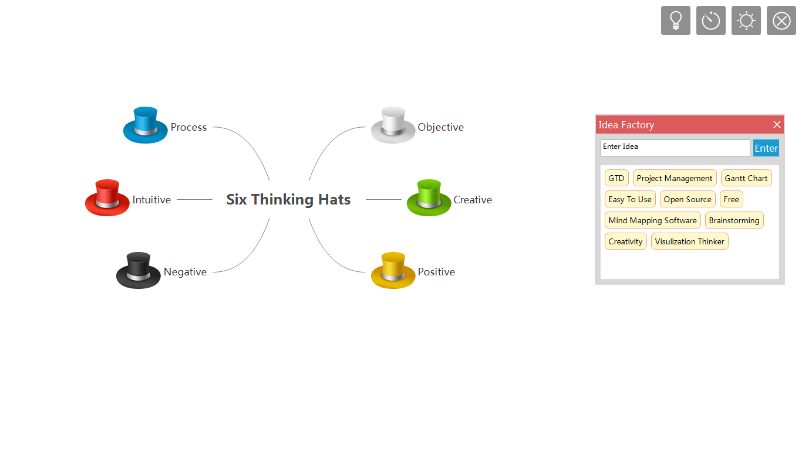
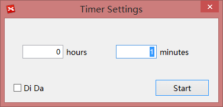
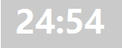
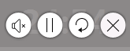

ブレーンストーミング
イノベーションは、今日の進化する社会での成功に不可欠です。ブレインストーミングは、新しいアイデアのための 1 つの創造性技術として確立しています。ブレーンストーミング機能が創造性を最大限に活用するためのに、 XMind は再設計されました。
ブレーンストーミング エディターブレーンストーミング モードに入ると、全画面エディターに切り替わります。ここで、アイデアに集中し、邪魔されることなく、インスピレーションやひらめきを記録できます。
メニューの[表示]→[ブレインストーミングを開始]を選択するか、F8キーを押して、ブレーンストーミング エディターに入ります。
再設計されたブレーンストーミング機能は、創造的なアイデアを生成することができます。エディタービューの右上隅に、それを可能にする 4 つのボタンがあります。
アイデアファクトリーアイデアのファクトリーはスムーズにあなたのアイデアを記録するためのフロート ダイアログ ボックスです。我々の脳に飛び込んできたアイデア 1 つずつ入力する必要があります。それが終わったら、マインドマップに直接ドラッグ&ドロップして、アイデアを整理するのに集中できます。
- 画面右上のアイディアファクトリーアイコンをクリックします。
- アイデアを入力し、"Enter"キーを押します。
- マインド マップにアイデアをドラッグ &ドロップします。
注:
- アイディアファクトリーに残っているアイディアは、XMind を再び開いたときにそこに留まっています。
- アイディアファクトリーでアイデアを選択し、Del キーを押してアイディアを削除します。
- "Ctrl + Z"を教えて、上記の操作を取り消すことができます。
多すぎるアイディアは、危険な場合あります。私たちの創造性を刺激するためのアイデアの量を制限するには、ブレーンストーミングの前に適切な時間を決めておきます。
- 画面右上のタイマーのアイコンをクリックします。
- 表示されるダイアログボックスで、タイマーをセットし、音声カウントを設定します。 
- タイマーへマウスを移動します。タイマーを停止し、オーディオエフェクトをオフにすることができます。 
時に、白い背景に黒のテキストがあなたの美学と一致せず、創造性を刺激しないのであれば、色を反転するナイトモードに切り替えることができます。
- 画面右上の太陽のアイコン をクリックして、ナイトモードに入ります。
- 画面右上の月のアイコンをクリックして、ナイトモードを終了します。
終了
:終了アイコンをクリックして、ブレインストーミングモードを終了します。